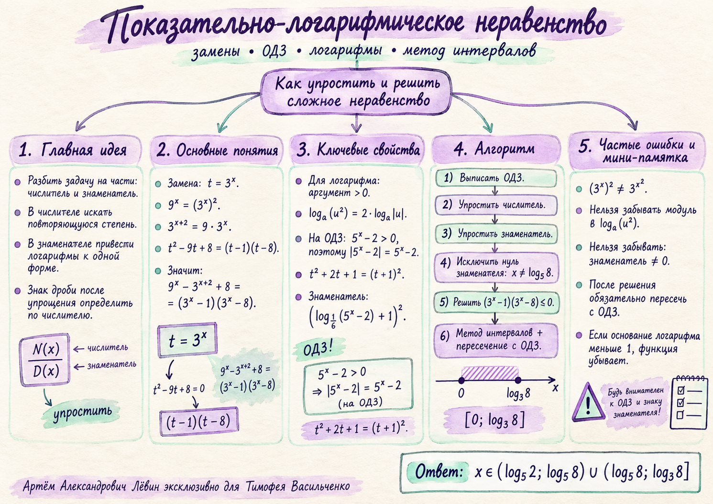

1
Показательная замена
Если одновременно встречаются степени вида a²ˣ и aˣ, ищите повторяющийся объект и вводите замену.
При t = 3ˣ числитель становится квадратным трёхчленом.
20 сентября 2026 · ЕГЭ · уверенный уровень
Тимофей Васильченко · преподаватель Артём Александрович Лёвин. Цель занятия — научиться раскладывать громоздкое неравенство на стандартные блоки: показательная замена, логарифмическое ОДЗ, квадрат знаменателя и метод интервалов.
01 · Теория
Если одновременно встречаются степени вида a²ˣ и aˣ, ищите повторяющийся объект и вводите замену.
При t = 3ˣ числитель становится квадратным трёхчленом.
Чётная степень снимается только с модулем:
В текущей задаче ОДЗ даёт 5ˣ − 2 > 0, поэтому модуль раскрывается со знаком «плюс».
После замены логарифмической части получается формула сокращённого умножения:
Квадрат неотрицателен, однако знаменатель дроби обязан быть строго ненулевым.
После упрощения знаменатель положителен на допустимых значениях, поэтому знак дроби определяется числителем. Остаётся произведение двух множителей и пересечение с ОДЗ.
02 · Алгебраическая интерпретация
Возвращая t = 3ˣ, получаем (3ˣ − 1)(3ˣ − 8).
Показать множители на моделиОДЗ: x > log₅2. Нуль знаменателя возникает при x = log₅8; эту точку нужно удалить.
Исследовать ОДЗ и запретКраткая визуальная памятка по тем же идеям: замена, ОДЗ, логарифмические свойства, алгоритм и типичные ошибки.

03 · Разбор основной задачи
Вводим t = 3ˣ и раскладываем квадратный трёхчлен.
Аргумент первого логарифма должен быть положительным:
На ОДЗ выражение 5ˣ − 2 положительно, поэтому модуль исчезает. Знаменатель сворачивается в квадрат.
Решаем запрещённое равенство: log₁⁄₆(5ˣ − 2) = −1. Получаем 5ˣ = 8.
На ОДЗ знаменатель положителен, поэтому достаточно решить:
Критические точки: 0 и log₃8. Получаем [0; log₃8].
Проверить знаки на числовой осиПересекаем [0; log₃8] с x > log₅2 и удаляем x = log₅8. Причём log₅8 < log₃8.
Других решений нет: на ОДЗ знаменатель строго положителен, поэтому знак исходной дроби полностью совпадает со знаком факторизованного числителя.
04 · Тренировочный блок
Решите неравенство, сохраняя порядок: ОДЗ → числитель → знаменатель → запрещённая точка → метод интервалов → пересечение.
05 · Типичные ошибки
06 · Проверка себя
Отмечено: 0 из 6